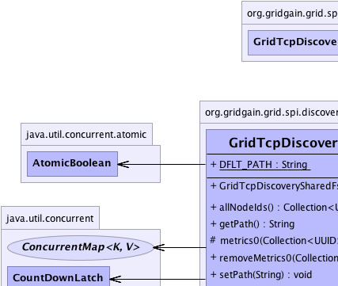
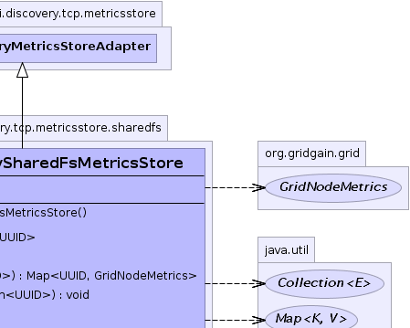
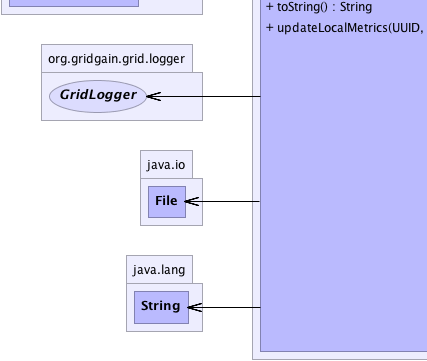
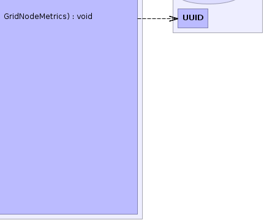

org.gridgain.grid.spi.discovery.tcp.metricsstore.GridTcpDiscoveryMetricsStoreAdapter
org.gridgain.grid.spi.discovery.tcp.metricsstore.sharedfs.GridTcpDiscoverySharedFsMetricsStore
org.gridgain.grid.spi.discovery.tcp.metricsstore.GridTcpDiscoveryMetricsStoreAdapter
org.gridgain.grid.spi.discovery.tcp.metricsstore.sharedfs.GridTcpDiscoverySharedFsMetricsStore
|
GridGain™ 4.0.0c
Community Edition |
|||||||||
| PREV CLASS NEXT CLASS | FRAMES NO FRAMES | |||||||||
| SUMMARY: NESTED | FIELD | CONSTR | METHOD | DETAIL: FIELD | CONSTR | METHOD | |||||||||
java.lang.Object
public class GridTcpDiscoverySharedFsMetricsStore
Shared filesystem-based metrics store.
GridTcpDiscoverySharedFsMetricsStore.setPath(String)).GridTcpDiscoveryMetricsStoreAdapter.setMetricsExpireTime(int)).
If GridTcpDiscoverySharedFsMetricsStore.getPath() is not provided, then GridTcpDiscoverySharedFsMetricsStore.DFLT_PATH will be used and
only local nodes will discover each other. To enable metrics store working over
network you must provide a path to a shared directory explicitly.
The directory will contain files with serialized metrics named like the following 94816A59-EB51-44EE-BB67-8B24B9C10A09.
| Wiki | |
| Forum |
|  |  |
|  |  |
| Field Summary | |
|---|---|
static String |
DFLT_PATH
Default path for local testing only. |
| Fields inherited from class org.gridgain.grid.spi.discovery.tcp.metricsstore.GridTcpDiscoveryMetricsStoreAdapter |
|---|
DFLT_METRICS_EXPIRE_TIME |
| Constructor Summary | |
|---|---|
GridTcpDiscoverySharedFsMetricsStore()
|
|
| Method Summary | |
|---|---|
Collection<UUID> |
allNodeIds()
Gets all node IDs currently contained in the store. |
String |
getPath()
Gets path. |
protected Map<UUID,GridNodeMetrics> |
metrics0(Collection<UUID> nodeIds)
Requests metrics from store in case local cached metrics are outdated. |
void |
removeMetrics0(Collection<UUID> nodeIds)
Removes metrics from store. |
void |
setPath(String path)
Sets path. |
String |
toString()
|
void |
updateLocalMetrics(UUID locNodeId,
GridNodeMetrics metrics)
Updates local node metrics in the store. |
| Methods inherited from class org.gridgain.grid.spi.discovery.tcp.metricsstore.GridTcpDiscoveryMetricsStoreAdapter |
|---|
getMetricsExpireTime, metrics, removeMetrics, setMetricsExpireTime |
| Methods inherited from class java.lang.Object |
|---|
clone, equals, finalize, getClass, hashCode, notify, notifyAll, wait, wait, wait |
| Field Detail |
|---|
public static final String DFLT_PATH
| Constructor Detail |
|---|
public GridTcpDiscoverySharedFsMetricsStore()
| Method Detail |
|---|
public String getPath()
@GridSpiConfiguration(optional=true) public void setPath(String path)
path - Shared path.
public void updateLocalMetrics(UUID locNodeId,
GridNodeMetrics metrics)
throws GridSpiException
GridSpiException - If an error occurs.locNodeId - Id of the local node (caller node).metrics - Local node metrics.protected Map<UUID,GridNodeMetrics> metrics0(Collection<UUID> nodeIds) throws GridSpiException
metrics0 in class GridTcpDiscoveryMetricsStoreAdapterGridSpiException - If any error occurs.nodeIds - Nodes to request metrics for.
public Collection<UUID> allNodeIds() throws GridSpiException
GridSpiException - if an error occurs.
public void removeMetrics0(Collection<UUID> nodeIds) throws GridSpiException
removeMetrics0 in class GridTcpDiscoveryMetricsStoreAdapterGridSpiException - If any error occurs.nodeIds - Nodes to remove metrics of.public String toString()
toString in class Object
|
GridGain™ 4.0.0c
Community Edition |
|||||||||
| PREV CLASS NEXT CLASS | FRAMES NO FRAMES | |||||||||
| SUMMARY: NESTED | FIELD | CONSTR | METHOD | DETAIL: FIELD | CONSTR | METHOD | |||||||||
|
GridGain - Real Time Big Data
|
|

|
|